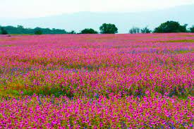
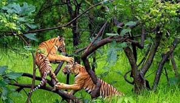
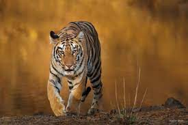
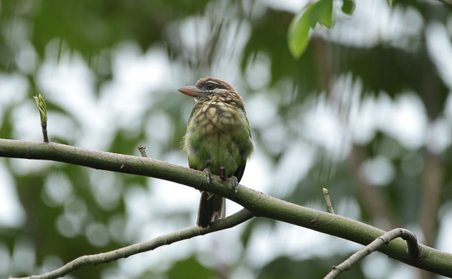
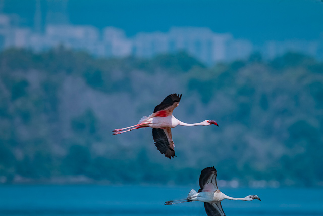

Bhimashankar Sanctuary is home to a subspecies of the Indian Giant Squirrel (or Malabar Giant Squirrel), the state animal of Maharashtra (Scientific name: Ratufa Indica Elphinstone). It is one of the three threatened Indo-Malayan squirrel species and the sanctuary authorities take major steps time and again to ensure its conservation and survival. Read More

KAAS PLATEAU RESERVED FOREST
Kaas plateau is a plateau located near Satara. It has been awarded as a UNESCO’s World Heritage Site (WHS). The Kaas Plateau is a laterite soil table land, typical of the the Western Ghats in Maharashtra. In the monsoon months, the Kaas Pathar, as it is locally known, transforms into a wildflower wonderland. Read More

KOYNA WILDLIFE SANCTUARY
The Koyna Wildlife Sanctuary, located in the heart of Satara district, Maharashtra, is a dense, green forest reserve. Established as a Wildlife Sanctuary in 1985 by the Indian government, it thrives in the Western Ghats region. With ample water sources and lush vegetation, the sanctuary provides an ideal habitat for various animal species. Read More

TADOBA-ANDHARI TIGER RESERVE
Tadoba-Andhari Tiger Reserve is one of the prominent tiger reserves in India, located in the state of Maharashtra. Established in 1995, it is named after the two significant rivers flowing through the reserve: Tadoba and Andhari.The reserve is home to a large population of big cats, including the Indian Leopard, Jungle Cat and the Bengal Tiger
Read More

KARNALA BIRD SANCTUARY
The Karnala Bird Sanctuary, situated in the Raigad district of Maharashtra, India, is a popular nature reserve known for its rich avian diversity and stunning landscapes. Spanning an area of approximately 12.11 square kilometers, this sanctuary is a haven for birdwatchers, offering sightings of various resident and migratory bird species.
Read More

THANE CREEK FLAMINGO SANCTUARY
Thane Creek Flamingo Sanctuary is a little-known spot flocked by migratory flamingos every year. The majority of these are Lesser Flamingos who come from Kutch, while the Greater Flamingos are said to come from as far as Iran. The creek itself is classified as an IBA (Important Bird Area) as more than 160 species of birds can be found here.
Read More